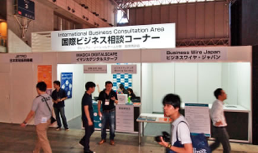

東京ゲームショウ2012 出展のご案内［出展以外のサービス］
ビジネスマッチングシステム アジア・ビジネス・ゲートウェイ （2012年7月稼働予定）
出展社とビジネスデイ来場者、もしくは出展社同士をマッチングするシステム「アジア・ビジネス・ゲート ウェイ」を稼働します。商談相手の検索、アポイントメント、商談案件の連絡、無料のミーティング・ スペースの予約までを、PCおよびスマートフォンで実施できます。英語版、日本語版を無料で利用できます。
- ■システムの流れ
- ■東京ゲームショウ2011ビジネスマッチングシステム利用実績
- ・登録社数： 323社 （うち海外企業122社）
・事前申込商談件数： 3,261件
・商談確定件数： 294件 （うち国際商談件数： 197件）
ビジネスミーティングエリア

ビジネスミーティングエリア内に出展社が無料で利用できる共用の
「無料ミーティング・スペース」を設置します。
- ■東京ゲームショウ2011
「無料ミーティング・スペース」利用実績 - ・商談件数： 235件
・利用企業国・地域： 22カ国・地域 日本 台湾 中国 米国
スペイン 韓国 フランス シンガポール 英国 ポーランド
イタリア オランダ カナダ チリ ベトナム 香港
スウェーデン ドイツ マレーシア メキシコ ロシア レバノン
国際ビジネス相談コーナー
国際的なビジネスをする際に必要な知識やノウハウ、サービスなどを相談できるコーナーを会場内に設けます。出展社、来場者は無料で利用できます。同コーナーには、海外進出する企業を支援する日本貿易振興機構（JETRO）のスタッフ、海外市場への広報に関する相談を受け付けるスタッフ、国内外のビジネスマッチングについて相談を受け付けるスタッフなどが常駐する予定です。